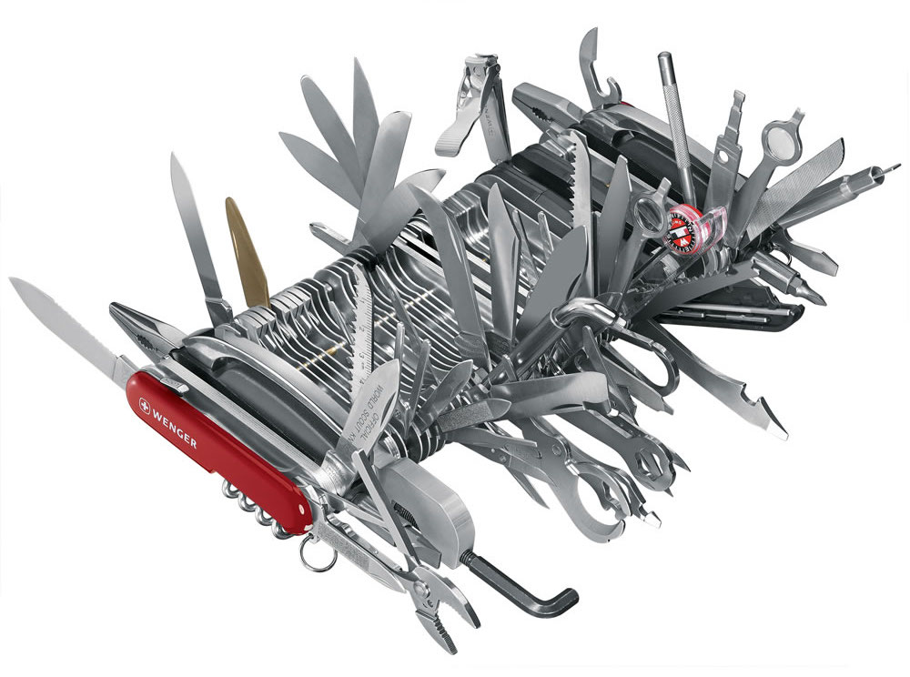

Introduction to version control with Git
Introduction to version control
Where is version control needed?
- Backing up changing files
- Storing and accessing an annotated history of changes
- Managing the merging of changes between different change sets
Why is this important?

Saving copies
important_code.py
important_code-2.py
important_code-fix.py
important_code-final.py
important_code-final-4Apr.py
Git commits
important_code.py
important_code.py
important_code.py
important_code.py
important_code.py
Types of version control
Centralized:
- Concurrent Version System (cvs)
- Subversion (svn)
- Perforce (p4)
Distributed:
- Decentralized CVS (dcvs)
- mercurial (hg)
- bazaar (bzr)
- Git (git)
Git

Git is a knife whose handle is also a knife. – Philip Guo

Getting started with Git
$ git --help
$ git config --global user.name "Kyle Niemeyer"
$ git config --global user.email "kyle.niemeyer@oregonstate.edu"
$ git config --global core.editor "vim"~ $ mkdir analysis_code
~ $ cd analysis_code
~/analysis_code $ git init
Initialized empty Git repository in ~/analysis_code/.git/~/analysis_code $ ls
~/analysis_code $ ls -A
.git
~/analysis_code $ cd .git && ls -A
HEAD config description hooks index info logs
Tip
Try this yourself.
Adding files
~/analysis_code $ touch README.md
~/analysis_code $ git add README.md
~/analysis_code $ git status
Tip
Try this yourself.
Committing changes
Snapshot of repository = revision
Committing a revision:
- Saves current state with a unique ID (hash)
- Names you as the author
- Allows you to add a message
~/analysis_code $ git commit
Tip
Try this yourself.
Options to save time
~/analysis_code $ git commit -m "This is my message"~/analysis_code $ git commit -am "This is my message
committing all changes"Commit messages
Bad commit message:
Fixed bugBetter commit message:
Fixed bug in mass calculation
Due to incorrect density value, mass was being calculated
orders of magnitude larger than it should. The correct value
of density fixed this problem.
Viewing history and differences
~/analysis_code $ git log~/analysis_code $ git diffUndoing work
Un-add a file that has been staged:
~/analysis_code $ git restore --staged <filename>Reset all tracked files to previous commit:
~/analysis_code $ git reset [mode] [commit]Remove uncommitted changes:
~/analysis_code $ git checkout -- <filename>Branches
~/analysis_code $ git branch
* main
~/analysis_code $ git branch experimental
~/analysis_code $ git branch
experimental
* main
~/analysis_code $ git branch new
~/analysis_code $ git branch
experimental
* main
new
~/analysis_code $ git branch -d new
~/analysis_code $ git branch
experimental
* main
~/analysis_code $ git switch experimental
~/analysis_code $ git branch
* experimental
mainMerging branches
~/analysis_code $ git switch main
~/analysis_code $ git merge experimental
~/analysis_code $ git log